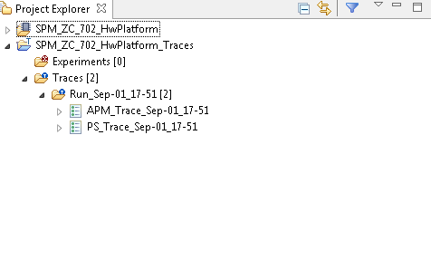
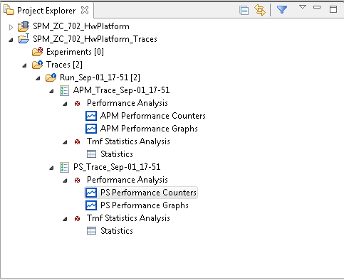

Project Explorer View
The Project Explorer view displays all the available projects in the workspace. When a performance analysis session is launched the data from the board is collected and stored as trace files in tracing project. Each of the hardware project contains a corresponding tracing project "*_Traces" where the data is stored. Performance counters data from single run is stored under designated "Run_*" folder, data from different sections is stored in different files under the run folder.

To analyse the data double click the trace file to open it in an Events editor view. After the file is opened, the tree under the trace file can be expanded to view the list of available analysis views.
